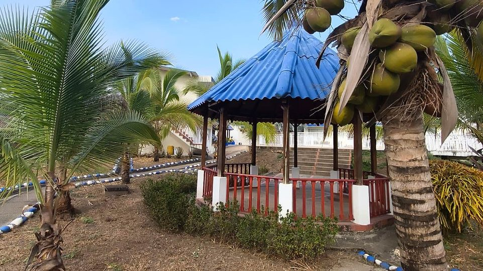

Hotel cerca de La Mesa, Cundinamarca: dónde dormir y qué hacer
La Mesa es la capital del Tequendama y la puerta de entrada a la tierra caliente. Aquí tienes qué ver en el pueblo, dónde dormir cerca con piscina y cómo armar un fin de semana entre los dos.
Lectura de 7 minHotel Cabaleón
Si buscas hotel cerca de La Mesa, Cundinamarca, Hotel Cabaleón queda a unos 40 minutos, en el campo de Tena: piscinas, jacuzzi, sauna y desayuno incluido, lejos del ruido del pueblo. Esta guía te cuenta qué ver en La Mesa, dónde dormir y cómo combinar los dos en un fin de semana.
Dónde dormir cerca de La Mesa: Hotel Cabaleón
Hotel Cabaleón es un hotel campestre en la vereda Escalante de Tena (Cundinamarca), a unos 40 minutos del casco urbano de La Mesa. Tiene 15 habitaciones y una cabaña, con desayuno e impuestos incluidos, desde $250.000 la noche. En 9.000 m² de jardines frente a la Cordillera Oriental hay piscina para adultos (de 90 a 170 cm), piscina infantil (60 cm), jacuzzi, sauna, baño turco, gimnasio, cancha polideportiva, el Restaurante Mangolé y Cabalante Bar.
| Habitación | Capacidad | Tamaño | Desde, por noche |
|---|---|---|---|
| Suite Cabaleón (hay 3) | Hasta 4 personas | 40 m² | $280.000 |
| Cabaña Cabaleón (hay 1) | Hasta 2 personas | 32 m² | $280.000 |
| Habitación Familiar Cuádruple (hay 2) | Hasta 4 personas | 25 m² | $280.000 |
| Habitación Estándar Triple (hay 10) | Hasta 3 personas | 24 m² | $250.000 |
El valor cambia con la fecha, entre $250.000 y $450.000 por noche. Se admiten mascotas en habitaciones seleccionadas por $70.000 la noche. Todos los datos del hotel están en Hotel en Tena, Cundinamarca, y el valor exacto de tus fechas, en la reserva en línea.
La Mesa en datos
| Dato | La Mesa, Cundinamarca |
|---|---|
| Ubicación | Capital de la provincia del Tequendama, al suroeste de Bogotá |
| Distancia a Bogotá | 54 km |
| Altitud media | 1.200 metros sobre el nivel del mar |
| Temperatura media | 24 °C |
| Días de mercado | Domingo y miércoles |
| Fiestas | Aniversario en marzo; ferias y fiestas en junio |
| Municipios vecinos | Tena (al oriente), Anapoima, El Colegio, Cachipay, Zipacón, Bojacá y Quipile |
Qué hacer en La Mesa
1. Parque central y la catedral Santa Bárbara
El corazón del pueblo es su parque central, con dos fuentes. A su lado está la Parroquia Santa Bárbara, que todos llaman «La Catedral», terminada a comienzos de la década de 1910. Cerca están los puentes de La Cochera y de las Corralejas y el antiguo edificio del Concejo.
2. Las estaciones del antiguo tren
Por La Mesa pasaba el ferrocarril, y sus estaciones de La Esperanza, San Javier, San Joaquín, Doima, El Hospicio y Las Margaritas fueron declaradas monumento nacional. En San Javier se conserva un aparato de 1928 que servía para girar las locomotoras.
3. Miradores sobre los cañones
Desde La Mesa hay miradores sobre el cañón del río Bogotá, que viene desde el Salto del Tequendama, y sobre el del río Apulo. Ve en la mañana, cuando el cielo suele estar más despejado.
4. Caminos de piedra y cascadas
Alrededor del pueblo quedan caminos antiguos de piedra. Cerca de La Esperanza está el Salto de las Monjas, y a unos 2 km del caserío de San Javier hay una caída de agua del río Apulo. Para las caminatas y las actividades de aventura, elige operadores formales y pregunta antes cómo está el camino.
5. Mercado, mango y vida de pueblo
Los domingos y miércoles hay mercado. La zona es frutera: el mango se cultiva sobre todo alrededor de San Joaquín, donde hay una plaza para comprarlo. En la noche, la Zona Rosa concentra la vida nocturna del pueblo.
Plan de fin de semana: La Mesa y Cabaleón
Sábado: pueblo en la mañana, piscina en la tarde
- Sal temprano de Bogotá y recorre el parque central y la catedral de La Mesa.
- Almuerza en el pueblo o en el Restaurante Mangolé, que sirve almuerzo de 12:30 a 3:00 p. m.
- Sigue unos 40 minutos hasta el hotel y haz el check-in desde las 3:00 p. m.
- Piscina hasta las 5:30 p. m. y cena en Mangolé, de 6:00 a 7:30 p. m.
Domingo: descanso sin afán
- Desayuno incluido, de 8:00 a 10:00 a. m.
- Sauna, jacuzzi, mini tejo o billar antes del almuerzo.
- Check-out hasta las 2:00 p. m., y zonas comunes hasta las 4:00 p. m.
Si vives en La Mesa: un plan cerca de casa
Para quien vive en La Mesa, Cabaleón es una escapada sin carretera larga. Puedes venir solo por el día con el Pasadía Premium, con almuerzo, piscina, jacuzzi, sauna y juegos; quedarte una noche para un aniversario o celebrar un cumpleaños o una reunión en el Gran Salón Mango Vista y los jardines. Escríbenos por WhatsApp con la fecha y cuántas personas serían.
Cómo llegar de La Mesa a Hotel Cabaleón
El trayecto toma unos 40 minutos en carro. El último tramo antes de la llegada es una vía veredal, así que conviene hacerlo con luz de día la primera vez. Al confirmar tu reserva te enviamos el pin exacto por WhatsApp. Hay parqueadero gratuito en el hotel. Si vienes desde Bogotá, aquí está la ruta completa a Tena.
Otros planes en la zona
Desde el hotel, Mesitas del Colegio queda a unos 30 minutos y La Gran Vía a 25. Mira también qué hacer en Mesitas del Colegio, la guía de Anapoima y qué hacer en Tena.
Fuentes: ficha del municipio de La Mesa en Wikipedia (consultada el 6 de noviembre de 2026) e información de Hotel Cabaleón.
Tu descanso comienza aquí
Elige fechas y habitaciones en nuestra página: ves tu factura al instante, con impuestos y desayuno incluidos, y confirmas con el anticipo del 50 % o el pago total. Directo con el hotel, sin intermediarios.
Preguntas frecuentes
¿Hay hoteles con piscina y jacuzzi cerca de La Mesa, Cundinamarca?
Sí. Hotel Cabaleón, en la vereda Escalante de Tena, queda a unos 40 minutos de La Mesa y tiene piscina para adultos, piscina infantil, jacuzzi, sauna y turco, con desayuno incluido.
¿A cuánto queda Hotel Cabaleón de La Mesa?
A unos 40 minutos en carro desde el casco urbano de La Mesa. El último tramo es una vía veredal y el hotel envía el pin exacto al confirmar la reserva.
¿Qué hacer en La Mesa, Cundinamarca?
Recorrer el parque central y la catedral Santa Bárbara, conocer las antiguas estaciones del tren, ir a los miradores sobre los cañones de los ríos Bogotá y Apulo, caminar por caminos de piedra y visitar el mercado de los domingos y miércoles.
¿Cómo es el clima de La Mesa?
Cálido: está a 1.200 metros de altura y su temperatura media es de 24 °C.
¿Hay pasadía cerca de La Mesa?
Sí. Hotel Cabaleón tiene el Pasadía Premium, un día sin alojamiento con almuerzo, piscina, jacuzzi, sauna y juegos. Es solo con reserva y el valor se confirma por WhatsApp.
¿Cuánto cuesta una noche cerca de La Mesa en Hotel Cabaleón?
Entre $250.000 y $450.000 por noche, según la habitación y la fecha, con desayuno e impuestos incluidos.
¿Cuánto se gasta de Bogotá a La Mesa, Cundinamarca?
La Mesa está a 54 km de Bogotá. El tiempo depende del tráfico a la salida de la ciudad, así que conviene revisarlo en Waze o Google Maps. Desde La Mesa, Hotel Cabaleón queda a unos 40 minutos.
¿Qué eventos hay en La Mesa, Cundinamarca?
El aniversario del municipio se celebra en marzo y las ferias y fiestas, en junio. Además, hay mercado los domingos y los miércoles.
¿Hay hoteles pet friendly cerca de La Mesa?
Sí. Hotel Cabaleón, a unos 40 minutos de La Mesa, admite mascotas en habitaciones seleccionadas, previa reserva, por $70.000 por mascota y por noche.
Equipo de Hotel CabaleónComplejo turístico campestre en Tena, Cundinamarca. Publicado el .